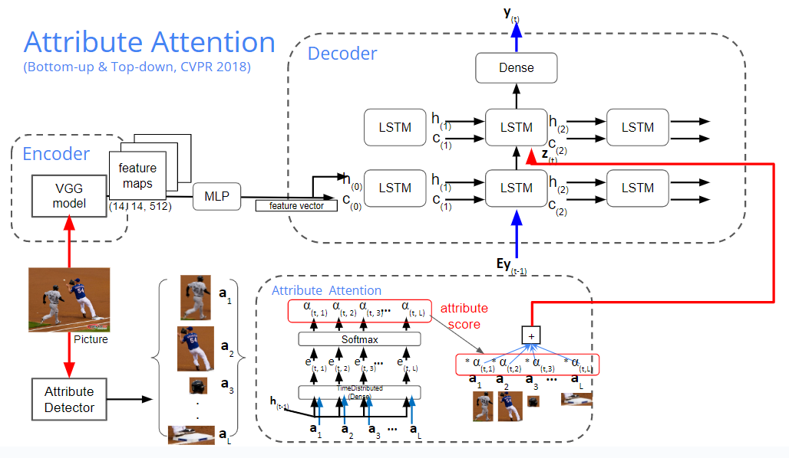
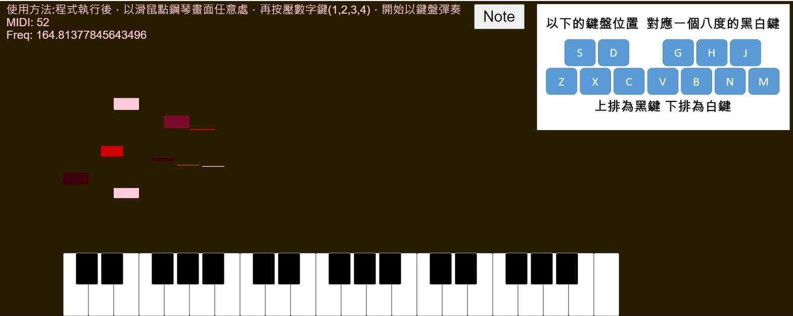

暨大資工的學習生活｜Learning Life of Computer Science in NCNU
當初我完全是以程式小白的身分進入了暨南大學的資工系，歷經了四年的連滾帶爬，我終於要畢業啦!
進入資工後，學習了許多以前沒接觸過的領域，我覺得，最重要的是培養了邏輯分析的能力。
快看看我到底都學了些甚麼可怕的東東吧!
電腦網路通信協定｜Computer Internet Protocol
這堂課我學習了許多網路工程相關的東西，從網路七層架構到各種網路設備、演算法等等。
尤其在作業的方面，老師要求我們用程式去實踐一些網路工具或 routers 演算法，像是 ping、traceroute、search shortest path等等。
真的是讓我印象特別深刻，因為藉由這樣的作業形式，我更加認識了許多的網路協定跟各種作業系統的 socket 使用方式及資訊傳遞方式。
機器學習｜Machine Learning
其實我的機器學習、深度學習以及專題、網路協定課程都是同個教授所教，每次上他的課都獲益良多，教授本身也很嚴格，但他並不是會強迫同學的老師，是難得的一位會教也會跟同學好好相處的教授。
進入人工智慧這個領域，真的是讓我又打開了一項新世界的大門。裡面的每一項概念、演算法都令我大開眼界，
從前認為生硬的演算法也能變化出肉眼所見的成果，因為這正是人工智慧的目標 – 趨向人性化的機器!
專題實作｜Topic Project
深度學習比起機器學習，更能讓我感受到人工智慧的強大，目前諸多人工智慧最新的論文技術，都是深度學習的範疇。
但機器學習比起深度學習，實踐的成本更低廉，是目前企業愛用的興新技術，還觸及數據分析領域，是相當實用的技術!
而我專題的主題就是做深度學習 -- Image Captioning
目標主要是當我們把圖片餵入model時，便能針對圖片做出一段文字，或者好幾段文字，做出彷彿由人眼看見一般的效果。這樣的功能其實算是影像辨識的延伸。
像是下圖 model 的作用是，比起像機器一般，辨識一堆沒必要的細節處，我們更加著重在人眼會注意到的重點影像， 我們需要去訓練機器來主動的學習甚麼是應該注意的，甚麼不是，進而產生如人眼看到的影像辨識效果。
而下圖這個 model，則是更進階的希望能藉由人為控制的方式，來產生期望的文字。
上圖 model 的結果是我們無法去控制的，而下圖這個 model 則是能夠去輸入我們期望的影像順序，來產生對應的一段文字。
程式美學設計｜Creative Coding
這門課，也是開啟我眼界的一個大門，第一次聽到 Creative Coding 這個名詞，也讓我對於 JavaScript 的強大感到震驚。 加上看見別人使用 JavaScript 寫出來的網頁如此生動有趣，我因此對於網頁產生了極大的興趣。能夠使用程式去產生有形的作品，這令我感到興奮。
Demo成果影片: https://youtu.be/8HweweaQ56I
聯絡我｜Contact me
這是我的連絡資訊
E-mail:thomas126148@gmail.com
歡迎寄給我任何想問的問題 或您的聯絡資訊: